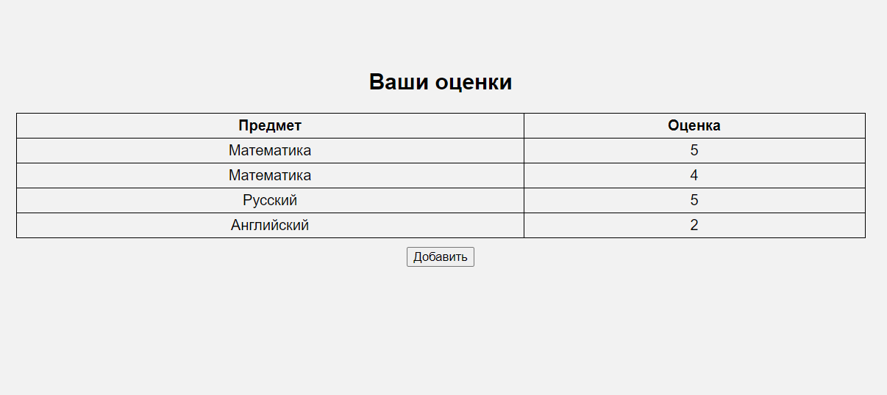
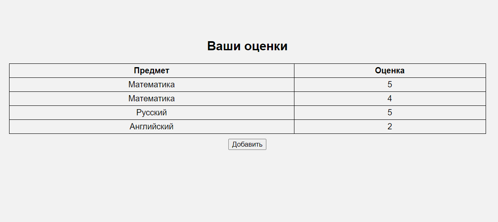

Задание: необходимо написать простой web-сервер для обработки GET и POST http запросов средствами Python и библиотеки socket.
Базовый класс для простейшей реализации web-сервера доступен https://docs.google.com/document/d/1lv_3D9VtMxz8tNkA6rA1xu9zaWEIBGXiLWBo1cse- 0k/edit?usp=sharing
Подробный мануал по работе доступен https://iximiuz.com/ru/posts/writing-python-web-server-part-3/
Задание: сделать сервер, который может:
-
Принять и записать информацию о дисциплине и оценке по дисциплине.
-
Отдать информацию обо всех оценах по дсициплине в виде html-страницы.
Мой код в данном задании по большей части представляет собой копипаст кода из приведенного выше мануала с некоторыми дополнениями.
Листинг кода сервера:
import socket
from email.parser import Parser
from functools import lru_cache
from urllib.parse import parse_qs, urlparse
HOST = '127.0.0.1'
SERVER_PORT = 14900
MAX_LINE = 64 * 1024
MAX_HEADERS = 100
HTML_STYLE = """
<style>
body {
font-family: Arial, sans-serif;
background-color: #f2f2f2;
text-align: center;
padding: 100px;
}
h1 {
color: #333;
}
p {
color: #666;
font-size: 30px;
}
</style>
"""
class Request:
def __init__(self, method, target, version, headers, rfile):
self.method = method
self.target = target
self.version = version
self.headers = headers
self.rfile = rfile
@property
def path(self):
return self.url.path
@property
def body(self):
size = self.headers.get('Content-Length')
if not size:
return None
content = self.rfile.read(int(size))
return content.decode('utf-8')
@property
@lru_cache(maxsize=None)
def url(self):
return urlparse(self.target)
@property
@lru_cache(maxsize=None)
def query(self):
return parse_qs(self.url.query)
@property
@lru_cache(maxsize=None)
def query_body(self):
return parse_qs(self.body)
class Response:
def __init__(self, status, reason, headers=None, body=None):
self.status = status
self.reason = reason
self.headers = headers
self.body = body
class MyHTTPServer:
def __init__(self, server_address):
self.server_address = server_address
self.conn = None
self.grades = {} # {subject: [grades]}
def serve_forever(self):
server_sock = socket.socket(socket.AF_INET, socket.SOCK_STREAM)
try:
server_sock.bind(self.server_address)
server_sock.listen(10)
print("Server is listening...")
while True:
client_socket, _ = server_sock.accept()
try:
self.serve_client(client_socket)
except Exception as e:
print('Connection failed', e)
finally:
server_sock.close()
print("Server stopped")
def serve_client(self, conn):
try:
req = self.parse_request(conn)
response = self.handle_request(req)
self.send_response(conn, response)
except ConnectionResetError:
conn = None
except Exception as e:
print("Error", e)
if conn:
conn.close()
def parse_request(self, conn):
rfile = conn.makefile('rb')
raw = rfile.readline(MAX_LINE + 1)
if len(raw) > MAX_LINE:
raise Exception('Request line is too long')
req_line = str(raw, 'iso-8859-1')
req_line = req_line.rstrip('\r\n')
words = req_line.split()
if len(words) != 3:
raise Exception('Malformed request line')
method, target, version = words
if version != 'HTTP/1.1':
raise Exception('Unexpected HTTP version')
headers = self.parse_headers(rfile)
host = headers.get('Host')
if not host:
raise Exception('Bad request')
return Request(method, target, version, headers, rfile)
@staticmethod
def parse_headers(rfile):
headers = []
while True:
line = rfile.readline(MAX_LINE + 1)
if len(line) > MAX_LINE:
raise Exception('Header line is too long')
if line in (b'\r\n', b'\n', b''):
break
headers.append(line)
if len(headers) > MAX_HEADERS:
raise Exception('Too many headers')
sheaders = b''.join(headers).decode('iso-8859-1')
return Parser().parsestr(sheaders)
def handle_request(self, req):
if req.path == '/' and req.method == 'POST':
return self.handle_post(req)
if req.method == 'GET':
if req.path == '/add_grade':
body = """<!DOCTYPE html>
<html lang="ru">""" + HTML_STYLE + """
<head>
<meta charset="UTF-8">
<meta name="viewport" content="width=device-width, initial-scale=1.0">
</head>
<script>
function validateGrade() {
const gradeInput = document.getElementById("grade");
const gradeValue = parseInt(gradeInput.value);
if (isNaN(gradeValue) || gradeValue < 1 || gradeValue > 5) {
alert("Оценка должна быть в диапазоне от 1 до 5");
return false;
}
return true;
}
</script>
<body>
<h2>Введите оценку по предмету</h2>
<p>
<form method="POST" action="/" onsubmit="return validateGrade()">
<input type="text" id="subject" name="subject" placeholder="Предмет">
<input type="text" id="grade" name="grade" placeholder="Оценка">
<input type="submit" value="Отправить">
</form>
</p>
<form action="/">
<input type="submit" value="На главную"/>
</form>
</body>
"""
return self.handle_get(body)
elif req.path == '/':
return self.handle_get()
content = """<!DOCTYPE html>
<html lang="ru">""" + HTML_STYLE + """
<body>
<h2>Такой страницы нет :(</h2>
<form action="/">
<input type="submit" value="На главную"/>
</form>
</body>
</html>
"""
return self.handle_get(content)
def handle_get(self, body=None):
content_type = 'text/html; charset=utf-8'
if body is None:
body = """
<!DOCTYPE html>
<html lang="ru">""" + HTML_STYLE + """
<head>
<meta charset="UTF-8">
<meta name="viewport" content="width=device-width, initial-scale=1.0">
</head>
<body>
<h2>Ваши оценки</h2>
<table style="border-collapse: collapse; width: 70%;" align="center">
<tr>
<th style="border: 1px solid black; padding: 4px;">Предмет</th>
<th style="border: 1px solid black; padding: 4px;">Оценка</th>
</tr>
"""
for subject, grades in self.grades.items():
for grade in grades:
body += f"""
<tr>
<td style="border: 1px solid black; padding: 4px;">{subject}</td>
<td style="border: 1px solid black; padding: 4px;">{grade}</td>
</tr>
"""
body += """
</table>
<form action="/add_grade" style="padding: 10px;">
<input type="submit" value="Добавить"/>
</form>
</body>
</html>
"""
body = body.encode('utf-8')
headers = [('Content-Type', content_type),
('Content-Length', len(body))]
return Response(200, 'OK', headers, body)
def handle_post(self, req):
subject = req.query_body['subject'][0]
grade = req.query_body['grade'][0]
try:
self.grades[subject].append(grade)
except KeyError:
self.grades[subject] = [grade]
return self.handle_get()
@staticmethod
def send_response(conn, resp):
wfile = conn.makefile('wb')
status_line = f'HTTP/1.1 {resp.status} {resp.reason}\r\n'
wfile.write(status_line.encode('iso-8859-1'))
if resp.headers:
for (key, value) in resp.headers:
header_line = f'{key}: {value}\r\n'
wfile.write(header_line.encode('iso-8859-1'))
wfile.write(b'\r\n')
if resp.body:
wfile.write(resp.body)
wfile.flush()
wfile.close()
if __name__ == '__main__':
server_address = (HOST, SERVER_PORT)
my_server = MyHTTPServer(server_address)
my_server.serve_forever()
Скринкаст:
Стартовая страница:
 Страница добавления оценки:
Страница добавления оценки:
 Добавление некорректной оценки:
Добавление некорректной оценки:
 После добавления корректной оценки:
После добавления корректной оценки:
 Чуть больше оценок:

Несуществующая страница:
Чуть больше оценок:

Несуществующая страница: